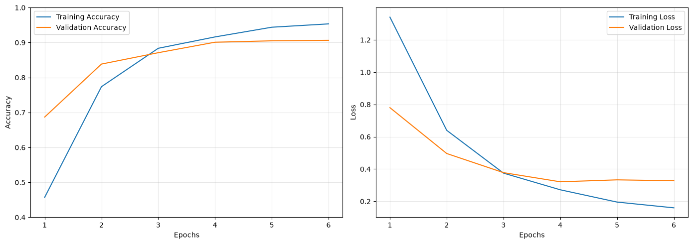
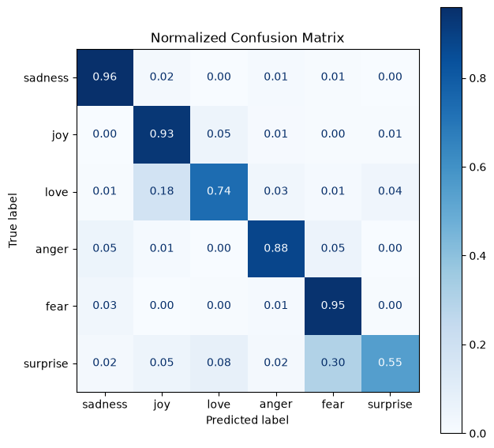

This project implements an end-to-end recurrent deep learning architecture designed to detect fine-grained affective states from uncurated microblog sequences. Utilizing the benchmark dair-ai/emotion corpus, the model classifies short texts into six distinct emotional topologies: sadness, joy, love, anger, fear, and surprise. The engineering objective was to stabilize recurrent gradient flows, mitigate rapid over-parameterization memorization, and deliver high class-conditional discrimination.
Raw tweet text was tokenized over a fixed sub-word vocabulary cutoff ($V = 10{,}000$) with uniform truncation and post-padding to a sequence boundary of $L = 50$. Word representations were mapped into a continuous dense space via an embedding matrix $E \in \mathbb{R}^{V \times 64}$.
Contextual representations were extracted using a stacked two-layer Bidirectional Long Short-Term Memory (BiLSTM) network with hidden cell dimension $d_h = 32$. To counter overfitting inherent to sequential text modeling, both variational input dropout and recurrent state dropout were fixed at $p = 0.2$ across both recurrent gates:
The terminal hidden states were channeled into a fully connected classification projection with non-linear ReLU activation, an additional dropout bottleneck layer ($p = 0.3$), and a 6-dimensional Softmax output layer trained under Sparse Categorical Cross-Entropy:
The model was optimized using Adam with a calibrated learning rate ($\alpha = 10^{-3}$) and mini-batch sizes of 32. Convergence was monitored against validation loss using an early stopping trigger with weight restoration to capture the global minimum before memorization degradation.

As illustrated above, training accuracy advanced steadily from 45.7% (Epoch 1) to 95.3% (Epoch 6), while validation loss dropped sharply from 0.780 to plateau cleanly around 0.321-0.327 with no divergence, proving effective structural regularization.
On the unseen test split ($N = 2{,}000$), the trained model achieved an overall Test Accuracy of 90.45% with a weighted macro F1-score of 0.90.
| Target Emotion | Precision | Recall | F1-Score | Support ($N$) |
|---|---|---|---|---|
| Sadness | 0.96 | 0.96 | 0.96 | 581 |
| Joy | 0.93 | 0.93 | 0.93 | 695 |
| Love | 0.75 | 0.74 | 0.74 | 159 |
| Anger | 0.91 | 0.88 | 0.89 | 275 |
| Fear | 0.83 | 0.95 | 0.88 | 224 |
| Surprise | 0.75 | 0.55 | 0.63 | 66 |
| Overall Accuracy | - | - | 0.90 | 2,000 |
